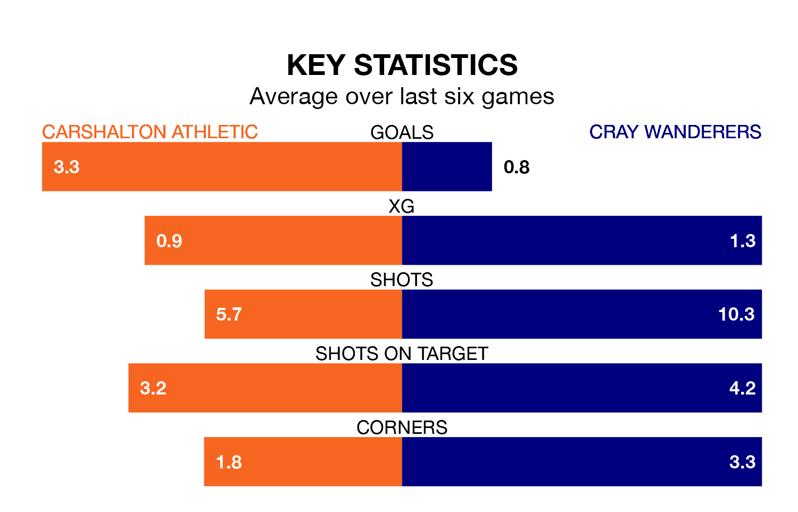

Carshalton Athletic face Cray Wanderers on Saturday seeking to protect their long unbeaten run in Isthmian Premier Division.
Carshalton are unbeaten in six, with four wins and two draws, ahead of the 3pm kick-off.
They face a Cray team who have won two and drawn two over the same number of games.
With 29 goals in 25 games so far this season, Cray are scoring at below the league average rate with 1.2 goals per game. And they are conceding at an average rate, letting in 39 goals at a rate of 1.6 per game.
Carshalton, meanwhile, are above average scorers, with 1.9 goals per game, compared to a league average of 1.6. They have conceded 1.5 goals per game.
In the last 10 years, Carshalton and Cray have played each other on six occasions. Carshalton won one of them, Cray four, and they drew once.
On average, Carshalton scored 1.8 goals and Cray 2.0 in those matches.
Their last meeting was on November 11, when Cray won 1-0 at home.
Athletic are seventh in the table after 27 games, of which they have won 12 and drawn six, earning 42 points.
Wanderers are nine places behind the hosts in 16th, with seven wins and seven draws putting them on 28 points.
Carshalton's last match was on Tuesday, a 3-1 win against Lewes.
Cray beat Wingate and Finchley 1-0 last time out, on January 27.
Updated: 14:12 (UTC), 02/02/24